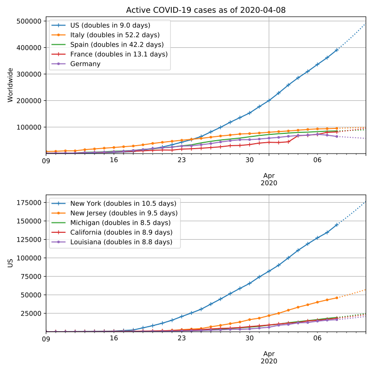
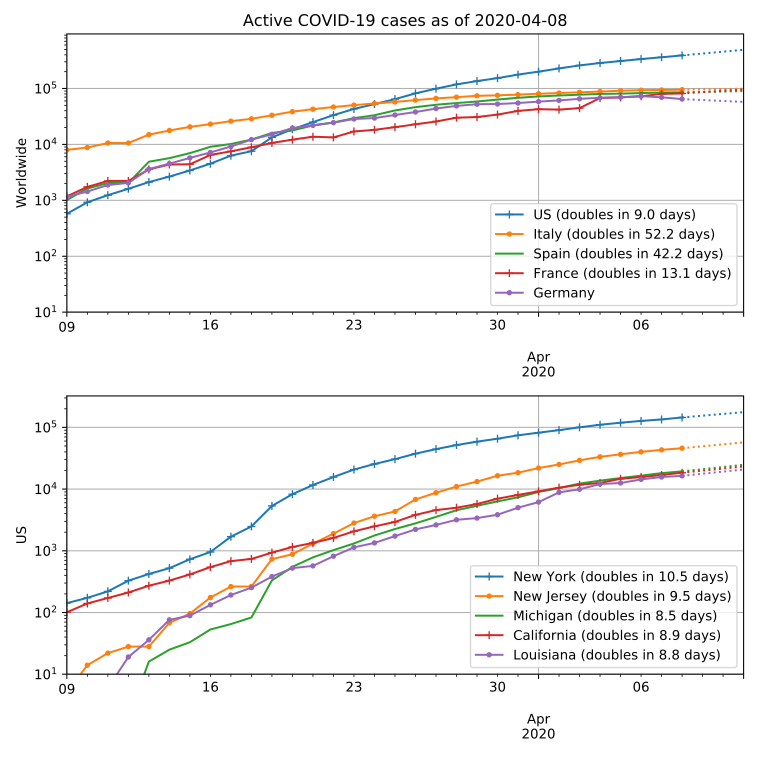

COVID-19 Time Series Plots
Pascal Getreuer
Here are plots as of 2020-03-21 of active cases of COVID-19 (coronavirus disease 2019) over time, including presumptive positive cases. The data is from this github repo maintained by Johns Hopkins University Center for Systems Science and Engineering.


Y axis:
The dotted lines are 3-day predictions made by regressing an exponential fit over data from the last 7 days. For instance for the US, the regression is
\[ \text{active cases} = 24933 \cdot 2^{t / 2.0\text{ days}}, \]
predicting that active US cases will double in 2.0 days.
But we can slow it down by taking precautions. How to protect yourself (US CDC).